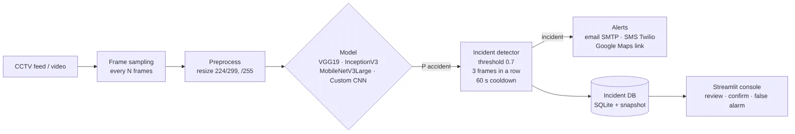
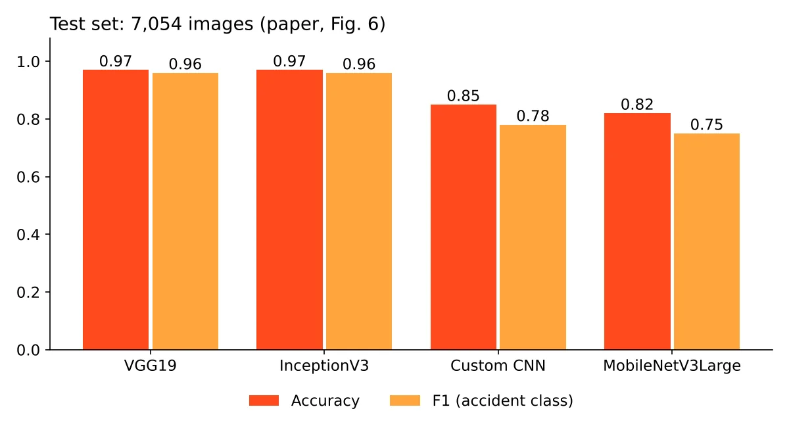

Traffic Collision Detection
Spotting crashes on CCTV and alerting responders in seconds
Four deep-learning models compared on one merged set of 41,476 CCTV images using two-phase transfer learning. The best model flags a collision, confirms it over several frames, and sends email, SMS and a Google Maps link to emergency responders, with every incident logged for review.
From camera to responder
architecture + test results- 01CCTV feedvideo stream
- 02Sample + preprocessevery 5th frame · 224/299 px
- 03ModelVGG19 · InceptionV3 · MobileNetV3 · CNN
- 04ConfirmP ≥ 0.7 for 3 frames · 60 s cooldown
- 05Alertemail · SMS · Maps link
- 06Log + reviewSQLite · Streamlit console
Accuracy on the test set
Speed (frames per second, RTX 4060)
~/screens
See it working


[01] ~/the-problem
Why it matters
Road crashes kill about 1.35 million people a year (WHO, 2023). Most are still noticed by someone watching a CCTV wall or by a witness calling in, and every minute before help is called matters.
Earlier automatic detectors often need clean, high-quality video, test one model at a time on different data, or stop at detection without telling anyone. This work compares four models on the same merged dataset and closes the loop: detect, confirm, alert, log.
Accident recall of 0.98 matters more than precision here: a missed crash costs far more than an operator dismissing a false alarm.
[02] ~/how-it-works
How it works
Merged data, two-phase transfer learning, and a detector that waits for confirmation before it raises an alarm.
- 01
Merge three datasets
462 + 12,904 + 6,191 accident images and 528 + 22,394 + 15,420 normal ones, de-duplicated and split once so no image leaks between splits.
- 02
Preprocess + augment
Pixels scaled to [0, 1], resized to 224 or 299 px; ±20° rotation, 20% shifts, shear, zoom, brightness 0.8–1.2 and flips for varied cameras and light.
- 03
Weight the rare class
Accidents are about a third of the data, so the loss weighs them 1.5849 vs 0.7304 for normal frames.
- 04
Phase 1: train the head
Epochs 1–60: the ImageNet backbone stays frozen and only the new classifier learns (Adam, lr 1e-4).
- 05
Phase 2: fine-tune
Epochs 61–100: the top of the backbone is unfrozen and tuned at lr 1e-5, with L2, dropout, LR scheduling and early stopping.
- 06
Detect, confirm, alert
Every 5th frame is scored; 3 positive frames in a row raise one incident, which is emailed, texted with a Maps link and logged.
[03] ~/results
Results
Test set of 7,054 images (2,235 accident, 4,819 normal), as published in the paper.
| MODEL | ACCURACY | ACCIDENT PRECISION | ACCIDENT RECALL | ACCIDENT F1 | MACRO F1 |
|---|---|---|---|---|---|
| VGG19 | 0.97 | 0.94 | 0.98 | 0.96 | 0.97 |
| InceptionV3 | 0.97 | 0.94 | 0.98 | 0.96 | 0.97 |
| Custom CNN | 0.85 | 0.72 | 0.84 | 0.78 | 0.83 |
| MobileNetV3Large | 0.82 | 0.68 | 0.85 | 0.75 | 0.81 |
Trade-off: MobileNetV3Large is the smallest (40.6 MB) and fastest, so it suits edge cameras with a human checking alerts. VGG19 and InceptionV3 run at 10–16 FPS, which is enough for live use because the detector only needs about 5 scored frames per second from a 25 FPS stream. MobileNetV3Large's validation accuracy dips for ~15 epochs after fine-tuning starts, then recovers: the expected effect of unfreezing layers.
HONEST LIMITS
— Frames are judged one at a time, from appearance rather than motion; low light, rain, odd angles and crowded junctions are harder, and the data is mostly daytime fixed-camera footage.
— The public repo is a clean reimplementation of the paper's pipeline. The numbers shown are the paper's published results; the trained weights aren't included.
WHAT I’D DO NEXT
→ Export to ONNX / TensorRT for faster edge inference
→ A temporal model that uses motion across frames
→ Night, rain and thermal footage, plus crash-sound audio
→ Feed smart-city traffic control and predict high-risk spots